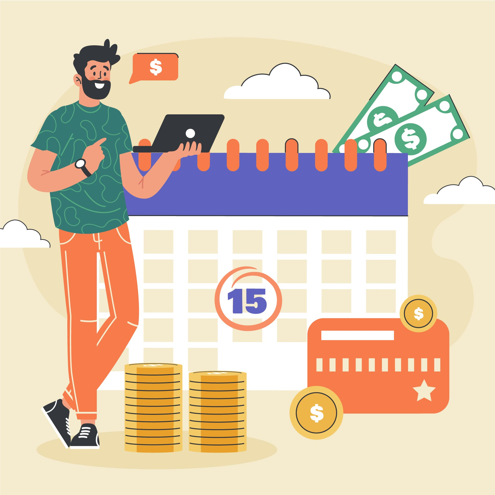

Como lucrar com eventos: estratégias e dicas

Introdução:
Existe mais de uma maneira de se beneficiar dos eventos? A resposta é sim! A gestão de eventos é uma indústria em constante crescimento que oferece muitas oportunidades de geração de renda. Quer você seja um organizador de eventos experiente ou novo no setor, é importante ter uma estratégia clara para monetizar seus eventos.
Neste artigo, abordaremos maneiras eficazes de monetizar seus eventos, desde a venda de ingressos até encontrar patrocinadores e criar experiências únicas para os participantes!
Comece a lucrar com eventos com a venda de ingressos!
A forma mais óbvia de lucrar com os eventos é através da venda de ingressos. E para ter sucesso, é importante ter táticas de preços competitivas e uma estratégia de publicidade eficaz para atingir o seu público-alvo.
É importante também que o evento ofereça uma experiência única e atrativa, que justifique o preço do ingresso e crie demanda entre potenciais compradores. Além disso, é importante lembrar que a organização do evento envolve custos como aluguel de sala, pessoal de produção e informação, e esses custos devem ser levados em consideração na determinação do preço dos ingressos.
Ou seja, é possível ganhar dinheiro vendendo ingressos para eventos, mas isso exige um planejamento cuidadoso, preço justo e um evento único e valioso!
2 – Tenha clareza do ciclo de vendas
Quais etapas seu potencial cliente passa entre a visualização de sua comunicação e a compra de um ingresso? Conhecer o ciclo de vendas de um evento de viagem é essencial para colocar as peças certas no lugar e transformá-las em vendas.
Vale lembrar também que quanto maior o investimento do participante, mais informações sobre o evento turístico são fornecidas antecipadamente. Mudanças de lote, prazos parciais e vendas em grupo podem acelerar as compras.
Cobre uma taxa apenas para a emissão dos certificados
A possibilidade de lucrar com eventos cobrando apenas pela emissão de certificados é uma prática comum e pode sim ser uma fonte de renda. Essa estratégia é ideal para utilização em eventos acadêmicos e educacionais como cursos, palestras e workshops onde os participantes recebem certificado de conclusão.
Essa estratégia pode tornar o evento mais acessível e atrativo ao público. Contudo, é importante que este pagamento seja transparente e justo e que os depoimentos sejam dados de forma clara e objetiva para evitar mal-entendidos ou insatisfação entre os participantes.
Busque patrocínio e parcerias
Outra forma mais tradicional de lucrar com eventos é por meio de patrocínios e parcerias, principalmente para aqueles que possuem grande público ou atraem um público-alvo específico. As empresas interessadas em parcerias com eventos geralmente procuram formas de aumentar a exposição da sua marca, alcançar novos públicos e participar em eventos que se alinhem com os seus valores e interesses.
Os patrocinadores podem contribuir financeiramente em troca de publicidade e exposição da sua marca, e você pode oferecer diferentes níveis de patrocínio dependendo do tamanho do evento e da visibilidade do seu negócio.
Parcerias podem ser estabelecidas com empresas que oferecem produtos ou serviços complementares ao seu evento e podem promover coisas como uma melhor experiência para os participantes e descontos.
Que tal oferecer a venda de patrocínio de sessões de networking?
Você pode vender patrocínios para eventos de networking onde as empresas patrocinadoras têm a oportunidade de interagir com os participantes em um ambiente informal. Isso pode incluir o patrocínio de coffee breaks ou happy hours. Os patrocinadores se beneficiam de oportunidades únicas de networking e maior visibilidade da marca.
E se você quer aprender mais sobre como encontrar e se relacionar com futuros patrocinadores para o seu evento, Compre agora o nosso e-book clique no banner abaixo!
Venda produtos e serviços exclusivos!
Ofereça produtos ou serviços exclusivos que só poderão ser adquiridos durante o evento, criando um senso de urgência e exclusividade! É claro que devem ser bem planeados e devidamente comercializados.
Além disso, é importante pesquisar e identificar quais produtos ou serviços podem fazer sucesso no evento, levando em consideração o público-alvo e a temática do evento.
Venda de merchandising
Uma forma um pouco mais indireta de lucrar com eventos é investir na criação de produtos personalizados. A venda de mercadorias pessoais com a marca do evento pode realmente gerar receita adicional e promover a marca do evento.
Mercadorias, como camisetas, canecas, bonés, chaveiros e adesivos, são populares entre os participantes e podem ser vendidas no local ou em lojas online. Ah, mas tome cuidado e certifique-se de criar designs atraentes que as pessoas queiram comprar, certo?.
Venda cursos, palestras e workshops para lucrar com eventos
Lembre-se que o sucesso financeiro do seu evento depende da qualidade da organização, promoção e experiência dada aos participantes. Nesse sentido, uma excelente estratégia para capitalizar eventos é oferecer palestras, cursos ou workshops pagos como parte do evento, principalmente se o evento for direcionado a um público específico interessado em aprender ou se aprimorar.
Para atrair participantes, é importante oferecer temas relevantes e palestrantes experientes e conhecidos no tema. Além disso, é importante definir um preço adequado que justifique o valor agregado da palestra, curso ou workshop, e preparar espaço suficiente para as atividades e investir em tecnologia de alta qualidade para garantir a melhor experiência aos participantes.
Ou seja, é possível ganhar dinheiro vendendo palestras, cursos e workshops em eventos se eles forem bem planejados, oferecerem algo valioso e interessante ao público, tiverem preços razoáveis e forem suficientemente divulgados.
Como você pode ver, há muitas maneiras de se beneficiar dos eventos! Com as estratégias certas, você pode monetizar seu evento para torná-lo lucrativo e proporcionar experiências únicas e valiosas aos participantes.